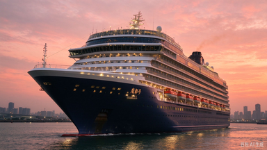
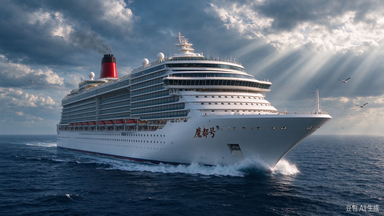
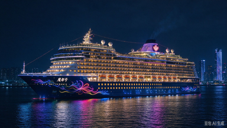
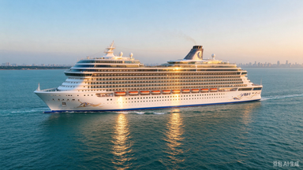

滚轮上下滚动、键盘 ← → 方向键都能翻页；不操作时每 3 秒自动播放

国产首艘大型邮轮 · 首航 2024 年 1 月

13.55 万吨 · 首航 2024 年 1 月
从上海出发 · 首航 2024 年 1 月

驶向深蓝 · 首航 2024 年 1 月
上海吴淞口国际邮轮港 · 首航 2024 年 1 月

驶向东海 · 首航 2024 年 1 月
操作方式：鼠标滚轮 ↑↓ ／ 键盘 ← → ／ 按住拖动 自动播放：每 3 秒一张